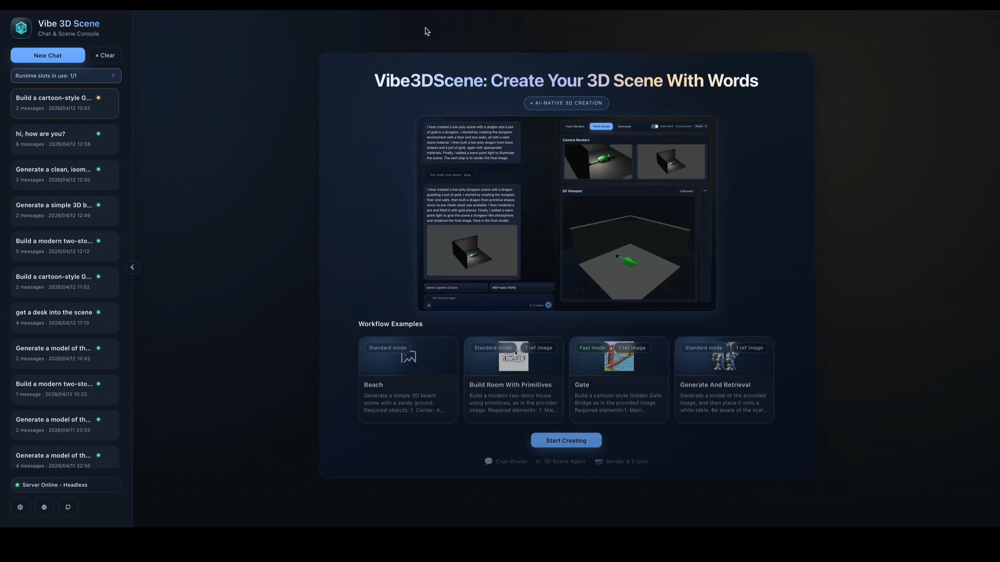
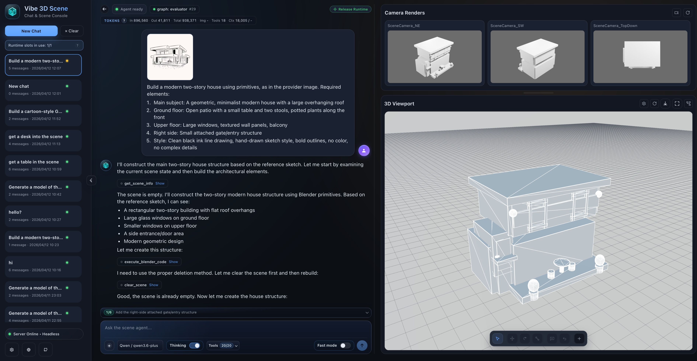
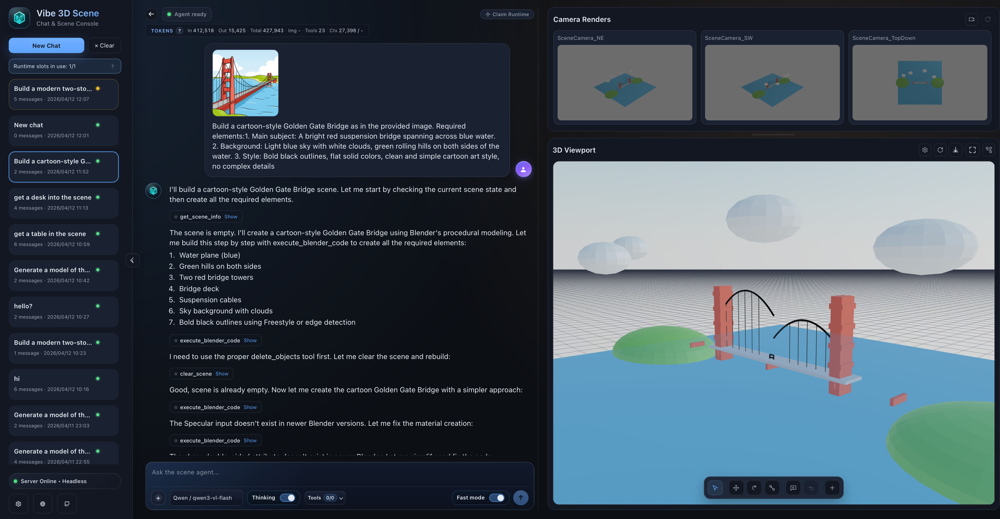
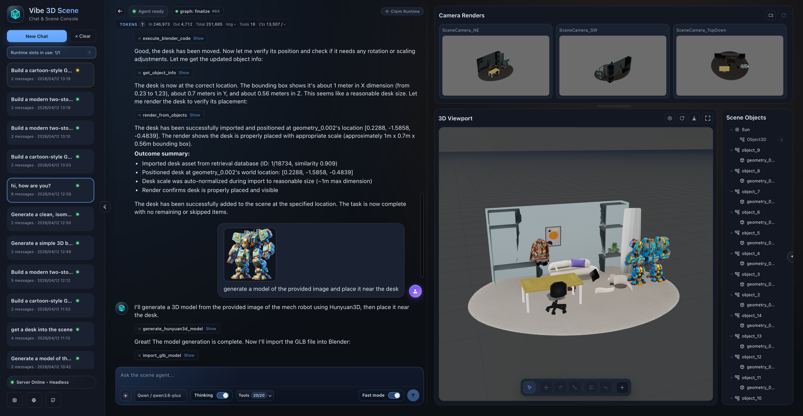
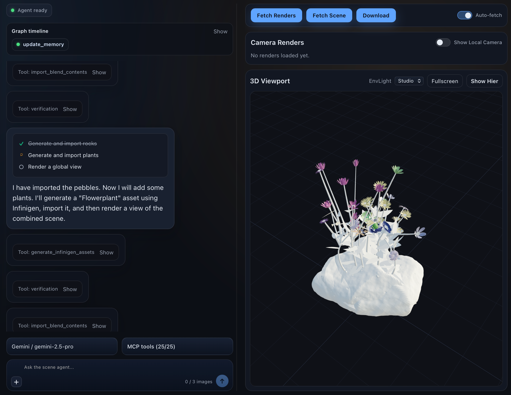

Runtime orchestration
FastAPI receives the request, resolves thread ownership and VLM configuration, then reuses or rebuilds the LangGraph instance for that thread before execution starts.
Vibe3DScene connects FastAPI, LangGraph, MCP tools, Blender runtimes, and external services into a single headless-first system. It supports direct execution, planner-driven scene construction, and multi-worker deployment without forcing users into a local Blender GUI.
The current system separates entry surfaces, request orchestration, tool mediation, Blender execution, and persistence so the same core runtime can drive web generation, Blender-side chat, and service-oriented deployment.
FastAPI receives the request, resolves thread ownership and VLM configuration, then reuses or rebuilds the LangGraph instance for that thread before execution starts.
MCP exposes the agent-callable tool registry while a small set of verification-only Blender commands remain internal to the graph for observation and geometry checks.
Redis ownership metadata, persisted `.blend` files, and stored image assets let sessions recover after restarts and keep long-running threads stable across workers.
Scene generation, image grounding, retrieval, and procedural workflows across the web-native runtime.

Headless runtime driving scene construction through a browser-facing workflow.

Short-loop scene editing and generation with visual feedback in the same runtime.

Reference images can be persisted, routed by role, and rehydrated per request.

Retrieval, generation, and camera-aware verification can be combined for bigger scene assembly tasks.

New tool support now includes SAM3D-style reconstruction flows inside the broader runtime.

Procedural generation services can sit beside retrieval and model-generation tools in the same stack.
A Blender-native creation loop with the same agent runtime and tool orchestration behind it.

Agent orchestration remains automatic while the creation loop can still happen inside Blender.
How requests move through the platform, how sessions stay stable, and how core tooling connects to external services.
flowchart LR
U[Web UI / CLI / Blender client] --> API[FastAPI]
API --> G[LangGraph runtime]
G --> MCP[MCP server and tool registry]
MCP --> B[Blender socket or headless Blender session]
MCP --> T[External tool services]
API --> S[(Redis + persisted storage)]
B --> O[Scene / Render / Export]
T --> O
flowchart LR
C[Client] --> GW[Gateway / Nginx]
GW --> W1[API Worker 1]
GW --> W2[API Worker 2]
W1 --> R[(Redis control plane)]
W2 --> R
W1 --> O1{Owns thread?}
W2 --> O2{Owns thread?}
O1 -->|Yes| E1[Execute locally]
O1 -->|No| P1[Proxy to owner]
O2 -->|Yes| E2[Execute locally]
O2 -->|No| P2[Proxy to owner]
E1 --> HS1[Headless session manager]
E2 --> HS2[Headless session manager]
HS1 --> FS[(Shared session and image storage)]
HS2 --> FS
flowchart TB
subgraph CORE[This repository]
API[FastAPI + runtime APIs]
GRAPH[LangGraph nodes]
MCP[MCP runtime + tool registry]
BL[Blender-facing tools]
RT[Runtime-only Blender checks]
end
subgraph EXT[Sibling tool-service stack]
TRE[TRELLIS2]
RET[Retrieval backends]
SAM[SAM reconstruction]
SS[SceneSmith compatibility APIs]
PCG[PCG services]
end
API --> GRAPH
GRAPH --> MCP
GRAPH --> RT
MCP --> BL
MCP --> TRE
MCP --> RET
MCP --> SAM
MCP --> SS
MCP --> PCG
Each request is initialized, routed into the right execution mode, verified with fresh evidence, and driven toward completion through evaluator-controlled loops.
flowchart LR
A["Client / Web / CLI"] --> B["chat or chat-stream request"]
B --> C["claim_or_proxy_request"]
C --> D["resolve_thread_vlm_for_chat"]
D --> E["get_agent(thread_id)"]
E --> F{"Graph exists and VLM matches?"}
F -->|No| G["create_agent_graph"]
G --> H["get_blender_tools + bind_tools"]
H --> I["build_agent_state_graph + compile"]
F -->|Yes| J["Reuse graph"]
I --> J
B --> K["Build initial request state"]
K --> L["messages + images + topology + fast_mode"]
J --> M["agent.ainvoke / agent.astream"]
L --> M
flowchart LR
A["router / plan_node"] --> B["agent"]
B --> C["turn_dispatch"]
C --> D{"assistant_turn_kind"}
D -->|has_calls| E["tools"]
E --> F["update_memory"]
F --> G["scene_observe"]
G --> H["verify"]
H --> I["evaluator"]
D -->|no_calls| I
I -->|continue| B
I -->|finalize| J["finalize"]
I -->|pure_qa| K["END"]
J --> K
The platform combines scene inspection, rendering, editing, retrieval, generation, reconstruction, and runtime control in one coordinated tool layer.
Observation tools provide the fresh evidence that the evaluator expects before a mutated scene can finalize.
Camera-oriented tools support both normal observation loops and verification-time evidence gathering.
The runtime supports direct scene mutation, imported models, retries, rollback, and manual object edits.
Retrieval tools can search, preview, and import scene assets or materials through external service adapters.
The generation layer spans mesh synthesis, reconstruction, and imported generated assets.
Request-scoped knobs decide how much planning, memory carryover, and verification the runtime should use.
Highlights across runtime behavior, model support, editing controls, tool integrations, and frontend experience.
@ references.